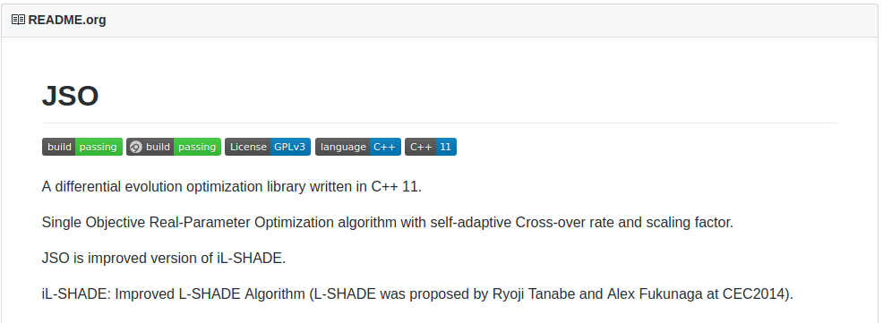

JSO, A differential evolution library.
Group 6
Created: 2018-04-03 Tue 13:03
What is JSO
JSO is a differential evolution algorithm presented in the Congress on Evolutionary Computation(CEC) 2017. It is a single objective real parameter optimization algorithm written by the 3 main authors Janez Brest, Mirjam Sepesy Maučec and Borko Bošković, all working for the Faculty of Electrical Engineering and Computer Science, University of Maribor.
Before our redesign
g_problem_size = 7; // dimension size.
g_max_num_evaluations = g_problem_size * 10000;
srand((unsigned)time(NULL));
g_pop_size = round(sqrt(g_p_size)*log(g_p_size) * 25);
g_memory_size = 5;
g_arc_rate = 1;
g_p_best_rate = 0.25;
domain_min = 90;
domain_max = 120;
Foo* fitness_algo = new Foo();
searchAlgorithm* algorithm = new LSHADE();
algorithm->fitness_algo_object = fitness_algo;
algorithm->run();
delete fitness_algo;
delete algorithm;
After our redesign
JSO::JSO algorithm(rastrigin, 2, -5.12, 5.12);
algorithm.run();
And to use a member function
We can use a lambda like this
using namspace JSO;
Foo obj;
JSO algorithm([&obj](double* a, double* b) { obj.sphere(a, b); }, 2, -100, 100);
algorithm.run();
For unit testing we used Catch

- Its a header only unit-testing library, hence very easy to use as a dependency
- We didn't need any external data, we only needed to generate individual candidates for evolution and make sure they are in our domain of population
For example, a simple unit test will look like this
TEST_CASE("Testing makeNewIndividual()")
{
JSO::JSO algorithm(rastrigin_func, 2, -5.12, 5.12);
double* calc[20] = {0};
for (int i = 0; i < 20; ++i) calc[i] = algorithm.makeNewIndividual();
for (int i = 0; i < 20; ++i) {
bool cond = *calc[0] <= 5.12 && *calc[1] >= -5.12;
REQUIRE(sizeof(calc) == 8*20);
REQUIRE(cond == true);
}
}
We also added Continuous Integration

https://github.com/justinjk007/JSO


Next Steps
- Right now the library is using
rand()andtimeto seed the random numbers in conjunction withCauchyDistribution to get truly random numbers. - We want to change that
C++11's Mersenne twister engine in<random>. - We also want to slightly change the main
run()so that it returns back some sort output to say that one iteration was done.